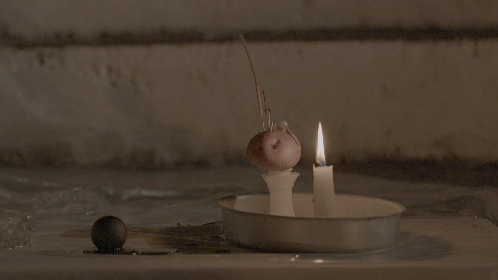
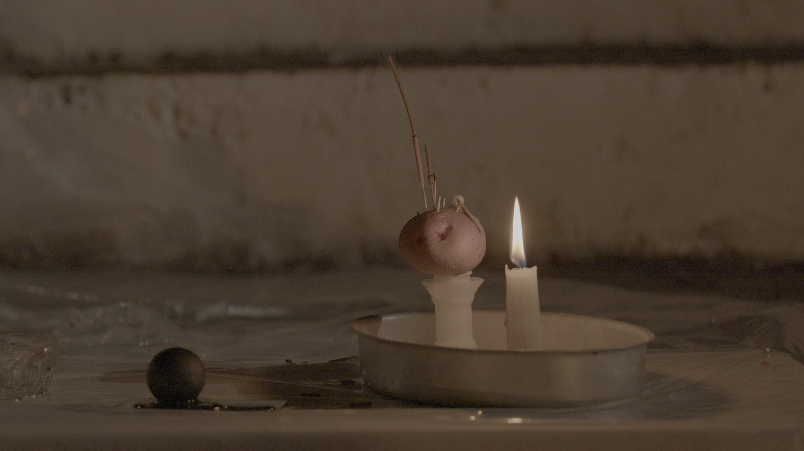
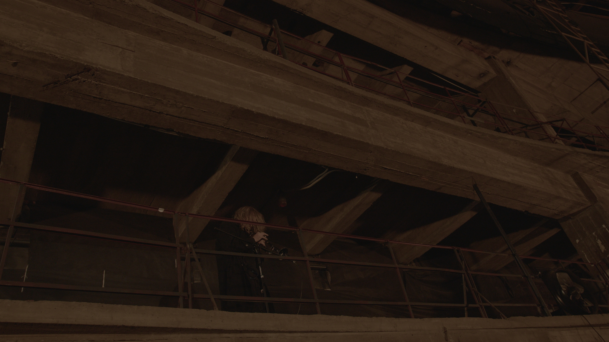
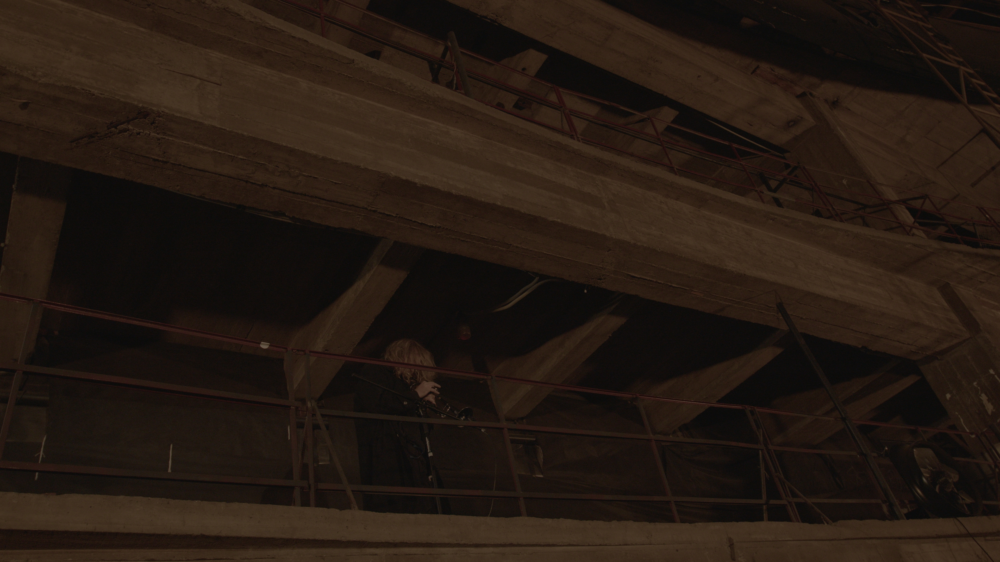

kaffa, yerevan, armenia, 2022
Anya Shekhvatova's work Kaffa is a site-specific installation with elements of performance that took place in a defunct cinema, once a hub for collective dreaming where individual boundaries and perception were blurred. At the heart of the installation is an artistic juxtaposition of a slow coffee ceremony and the traditional Circassian dance known as Kafa. This slow and graceful dance is a homage to Anya's childhood spent surrounded by Circassian culture and a symbolic farewell to its customs and traditions.The installation explores the themes of duality and the potential to overcome boundaries through the use of sound and movement. The slow coffee ceremony mimics the graceful movements of the Kaffa dance and the traditional costumes of the dancer, sharing this resemblance with the building's architecture, thus creating a harmonious balance and adding to the hermetic nature of the piece. Not limited to just sight and sound, Anya employs a range of media, including traditional elements and new technologies, as well as smell to create a multi-sensory immersive experience for the viewer.
The slow, deliberate movements of the ceremony and the sensory stimuli of the coffee are designed to provoke a meditative state and encourage introspection in the viewer, inviting to to experience the state of absolute fluidity from which objects and meanings emerge. By combining elements of the past and present, the work also considers the deeper connections that exist between cultural heritage and the modern world, creating a self- contained speculative narrative. Sound by Egor Gusev.
 


 
